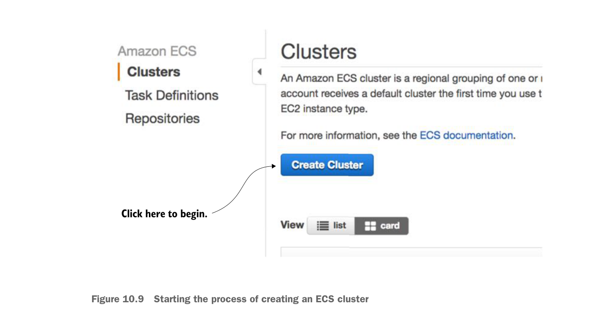

Uncheck these checkboxes.
Click the Cancel button.
ECS offers a wizard to bootstrap a new service container. You’re not going to use it.
Click here to begin.
Starting the process of creating an ECS cluster
- Number of instances you’re going to run in your cluster.
- Amount of Elastic Block Storage (EBS) disk space you’re going to allocate to each node in the cluster